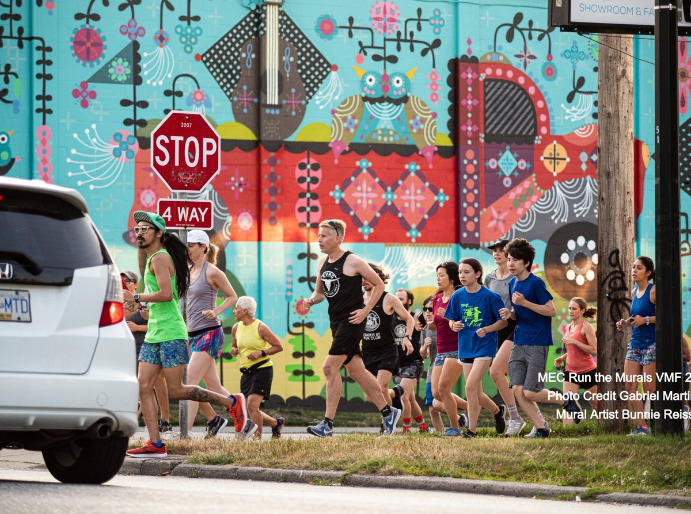
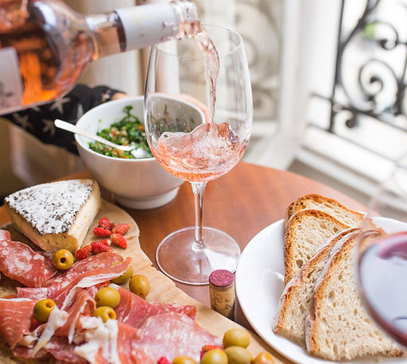

We work with nonprofit and charitable organizations to create sponsorship programs and find partners that align with their values. We also support businesses in maximizing their investment in corporate social responsibility.
LET'S TALK

As the founder of Flair, Donna Dixson brings integrity, authenticity and enthusiasm to every project. Detail oriented and results driven, she brings marketing savvy, creativity and a commitment to alignment into the challenging world of effective sponsorship relationships. Donna's extensive network of trusted colleagues add extra value, talent and experience to her work with clients.
As the oldest of three children in a military family, Donna has always been outgoing and a natural leader. After a brief run as a TV news anchor, she bid farewell to the city and settled on a quintessential farm in rural Saskatchewan. There she raised four daughters, ran a successful bed and breakfast operation and organized her first major event, the Biggest Family Reunion in Saskatchewan. Donna's focus for the past 20 years has been to say "yes" to as many exciting opportunities as possible. She brings a broad network of friends and colleagues into everything she does and is passionate about living with purpose and integrity. Donna enjoys running and cycling in her English Bay neighborhood, yoga, cooking great food for family and friends and is dedicated to being the best she can be.
It's always better to meet in person. Call or email Donna to set up lunch or coffee and Donna's buying!